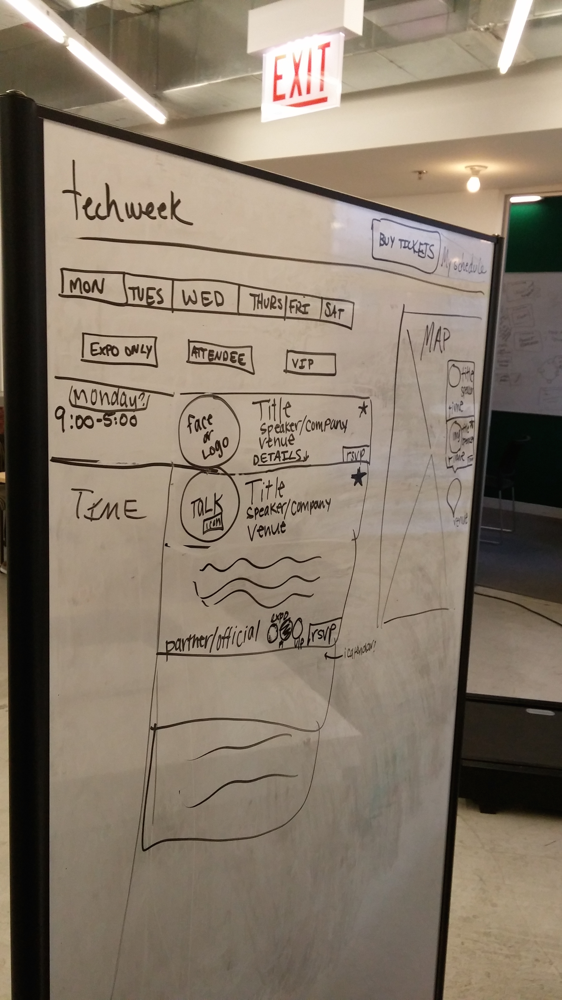

Techweek
Overview
For this project, my partner and I were tasked with redesigning the Techweek calendar and schedule to make the online and app experience more user-centered.
Research
We developed a research plan to help us understand user needs and the requirements for the product. We conducted several user interviews and a thorough competitive analysis.
The above chart shows the findings from our competitive analysis. "User Tested" means that we asked users to complete certain tasks on those websites in order to determine common pain points as well as things that worked well. From the research, we developed our problem statement and some key design principles to guide us through the remainder of the project.
User Personas
We developed user personas based upon the people we interviewed so that we could keep the needs of each group in mind as we designed the experience.
Ideation
My partner and I then carried out a brainstorming session where we used thousands of post-its and sketched our initial design ideas.
Wireframes and Prototypes
We prototyped our ideas throughout the process. We had three different iterations of wireframes. The ones shown below are from the final iteration after two rounds of user testing. We used Axure.